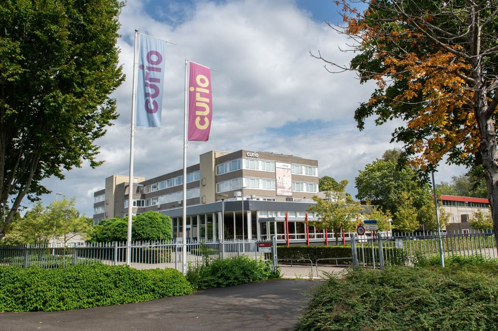
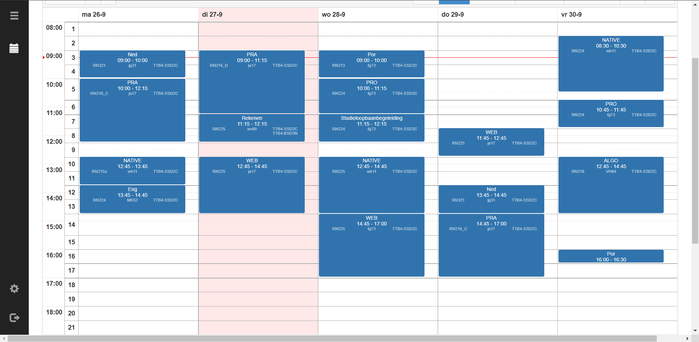
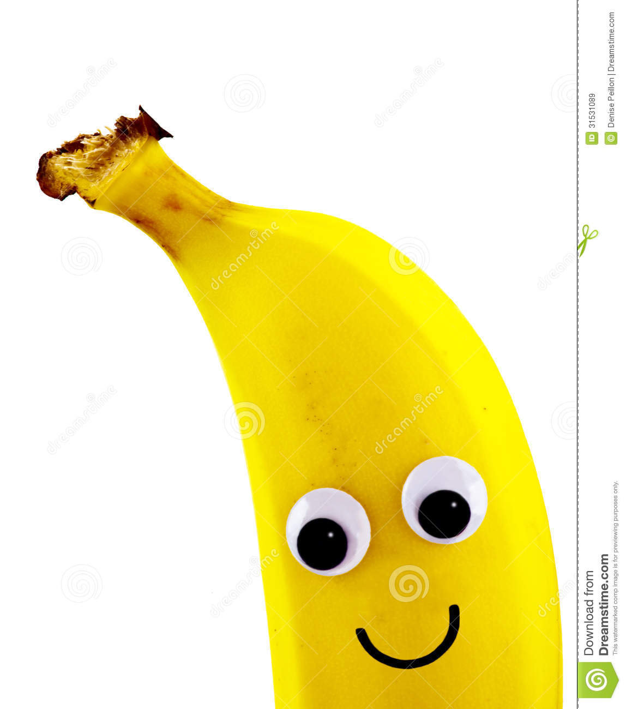
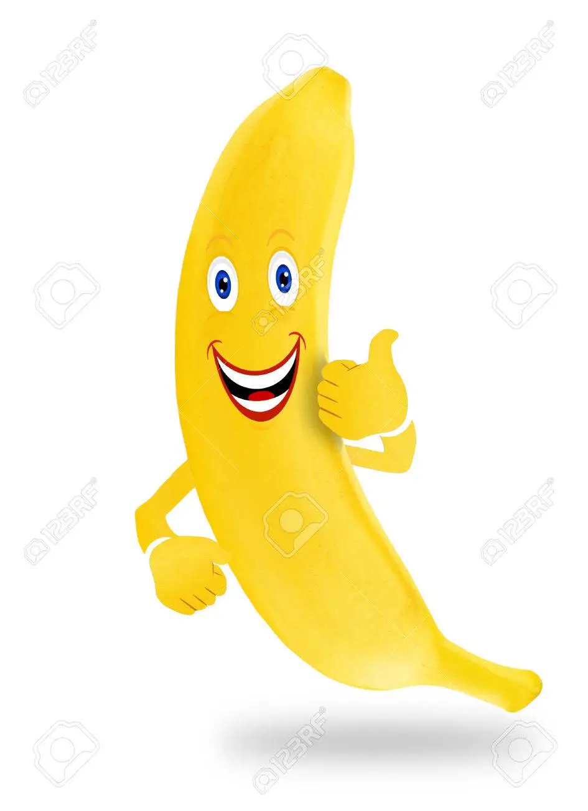
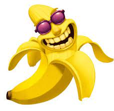

Over Software Development
De opleiding gaat over hoe je moet programmeren en de logica erachter

rooster
Zo ziet het rooster van een eerstejaars student eruit
Dit zijn al onze vakken
Native
Dit is een vak waar je in microbit begint te leren coderen
Web
Dit is een vak waarbij je met de basis van web Development begint
Generiek
Dit zijn de vakken zoals: ned, engels en rekenen
Over versnellen
in deze 4-jarige opleiding heb je de keuze om er een 3-jarige opleiding te maken. Maar dat kan alleen als je er goed voor staat, succes dus
Smoelenboek

Joost

Wicher
